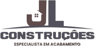

Olá! Meu nome é
Anisio Diogo
Sou Desenvolvedor Front-end e Especialista em UI/UX Designer
Atuo como desenvolvedor Front-end e especialista em UX/UI Design. Há 4 anos conectando estética e funcionalidade para criar sites, landing pages e sistemas web. Cuido de cada detalhe, desde o protótipo até o código final, garantindo performance e usabilidade.
</about-me>Olá Meu nome é Anisio Diogo.
Com 20 anos, moro em Teresina/PI e sou graduando em Ciência da Computação. Mas a minha jornada prática começou cedo: há 4 anos atuo misturando desenvolvimento Front-end e especialista em UX/UI Design. Sou apaixonado por conectar estética e funcionalidade. Minha abordagem une habilidades em pesquisa de usuários, wireframing e prototipagem à implementação técnica do Front-end. Isso me permite criar sites, e-commerces e sistemas web que não são apenas visualmente atraentes, mas intuitivos e centrados no usuário.
A cada projeto, um novo desafio.
Você tem algum projeto? Vamos tirá-lo do papel?
- Contato
- devanisiodiogo@gmail.com
- Telefone
- +55 (99)98185-1934
- Línguas faladas
- Português - Inglês
Serviços que Ofereço
Criamos experiências digitais significativas, unindo design intuitivo, desenvolvimento web de alta performance e análise de dados estratégica para destacar seu negócio e liderar categorias.
-
UX/UI Designer Specialist
Crio protótipos intuitivos e visualmente atraentes, focados em uma experiência do usuário impecável e centrada no usuário.
-
Desenvolvimento Web
Crio sites institucionais, responsivos e dinâmicos, do protótipo até a entrega do código final.
-

Landing Pages
Páginas focadas em captar leads e vender seu serviço ou produto de forma direta e eficiente.
-
E-commerce
Que tal sua própria loja virtual? Comece a vender seus produtos ou serviços na internet com facilidade.
-

Branding & Design Gráfico
Criação de logos, identidade visual e materiais gráficos que fortalecem sua marca.
-
Power BI & Dashboards
Transformo dados complexos em dashboards interativos e relatórios estratégicos para tomada de decisão.
-

Banco de Dados & Automação
Transformo dados complexos em dashboards interativos e relatórios estratégicos para tomada de decisão.
Formação e Experiência
-
2021 - 2023 Ensino Médio
Formação geral.
Centro Educa Mais Olindina Nunes Freire - Pedreiras/MA
-
2024 - 2027 Graduação em Ciência da Computação
Em andamento no 5°Período. Base sólida em algoritmos, estrutura de dados e engenharia de software, com foco atual no desenvolvimento prático de aplicações completas.
Uninassau - Teresina/PI
-
Fundador & Técnico de Suporte em TI 2020 - 2025
Como fundador e responsável técnico, gerenciei toda a operação de uma loja especializada em infraestrutura de TI. Minha atuação principal envolvia o diagnóstico preciso, reparo e upgrade de hardware de computadores e notebooks, além da instalação e configuração de sistemas operacionais e softwares. Também trabalhei ativamente no projeto e estruturação de redes locais, configurando cabeamentos, roteadores e switches. Ao longo desses anos, desenvolvi uma forte habilidade de comunicação e resolução de problemas através do atendimento direto ao cliente, prestando suporte técnico ágil tanto de forma remota quanto presencial.
A.D Information - Trizidela do Vale/ MA
-
Designer Gráfico e Operador de Produção 2024
Atuei na criação completa de materiais visuais, unindo o design digital à produção física. Fui responsável por desenvolver identidades visuais, logomarcas e artes para diversos materiais promocionais, utilizando domínio avançado no pacote Adobe (Photoshop e Illustrator) e CorelDRAW. Além do trabalho criativo das interfaces e peças, também operei ativamente o maquinário CNC para cortes a laser em MDF e acrílico, bem como plotters de impressão e corte, garantindo a qualidade visual desde a concepção da arte até o acabamento final do produto.
Evoluart - Pedreiras/MA
-
2020 - 2019 Informática Básica Office
Domínio prático de ferramentas de escritório (Excel, Word, PowerPoint) e fundamentos de sistemas operacionais, essenciais para a organização e análise de dados.
IBEM - Pedreiras/MA
-
2023 - 2021 Informática Avançada & Design
Aprofundamento em ferramentas digitais e conceitos práticos de design gráfico, criando a base criativa para a manipulação de imagens e criação de identidades visuais.
IBEM - Pedreiras/MA
-
2024 - 2023 Montagem/Manutenção de Computadores e Redes
Capacitação técnica focada em infraestrutura: montagem de hardware, diagnóstico e reparo de falhas, manutenção preventiva e configuração de redes locais e cabeamento.
IBEM - Pedreiras/MA
-
Desenvolvedor Front-end & Automação Jr (Estágio)
Atuei no desenvolvimento Full-stack de sites e sistemas, conectando design de interfaces à engenharia de dados. Fui responsável por desenhar a experiência do usuário (UI/UX), criando protótipos de alta fidelidade no Figma para múltiplos clientes corporativos. No desenvolvimento, criei APIs e robôs de automação utilizando Python e Node.js, além de atuar ativamente com banco de dados, realizando consultas complexas em MySQL e análises de Business Intelligence (BI). Todo o processo foi estruturado sob metodologias ágeis (Scrum) e com forte foco em documentação técnica.
TDCA - Tadeu Duarte e Consultores Associados - Teresina/PI
-
2026 Design de Experiência do Usuário (UX)
Certificação com foco em pesquisa de usuário, wireframing, prototipagem e design centrado no usuário para criação de interfaces acessíveis e intuitivas.
Google / Concurseira
-
2025 Programador Web
Formação focada em desenvolvimento web moderno, englobando as tecnologias fundamentais para criação de interfaces dinâmicas.
IFRS
Continuando me aperfeiçoando
Linguagem e Dominios
Do design ao código estruturado: o ecossistema de ferramentas e tecnologias que utilizo para transformar ideias em produtos digitais completos.
- Photoshop90%
- Ilustrador90%
- CorelDraw90%
- Figma90%
- Html90%
- CSS90%
- Js90%
- Node.js90%
- Python90%
- SQL90%
- Power BI90%
Projetos em Destaque
Cada linha de código e cada pixel têm um propósito. Explore os trabalhos onde uni pesquisa de usuário, prototipação e desenvolvimento web para transformar ideias complexas em interfaces intuitivas.
Meus Clientes e Parceiros

Impacto real, aprovado
por clientes reais
O resultado do meu trabalho na visão de quem acompanhou o processo de perto. Estes são depoimentos de parceiros com os quais tive a oportunidade de criar, desenvolver e evoluir produtos.
Fale comigo agora!
Estou disponível
Tem um projeto em mente, uma oportunidade ou quer apenas trocar uma ideia sobre código e design? Farei o possível para te responder o quanto antes!
</contact me>